Section 3.3: Measures of Position
Learning Objectives
1.Determine and interpret z-scores.
2.Determine and interpret percentiles.
3.Determine and interpret quartiles.
4.Determine and interpret interquartile range as a measure of dispersion.
5.Identify the relevant statistics to use based on the shape of the distribution.
Recall that the goal of this chapter is to describe and summarize quantitative data. We always consider the following characteristics when we do so.
•Center- (section 3.1) a way to describe the middle, or most typical. 
•Variation- (section 3.2) a way to describe how much the data varies.
•Distribution- (section 2.2) a way to describe the shape of the distribution.
•Outliers- are there any highly unusual values?
At this point, we can describe the way the distribution is shaped (section 2.2 and 3.1), how to identify the center (section 3.1), and how to measure the dispersion using standard deviation (section 3.2). Using those ideas, we can describe ALL the data in the data set, as a group, but not individual observations. We next turn our attention to comparing a particular observation to the rest of the data. Is the observation typical, or about average? Is it higher or lower than average? Is it unusually high or extremely out of step with the rest of the data? Those specific observations that are far outside the usual are called outliers (covered in section 3.4). A measure of relative position is a statistic that tells us where or how a specific observation is positioned in the data set.
Definition 1
A measure of position (also called measure of relative position, measure of location, or measure of relative standing) is a measure that indicates where a specific observation is positioned in the data set.
Z-scores
For example, after a midterm exam your enlightened professor might inform the class that the distribution of exam scores was bell-shaped, with an average of 72, and a standard deviation of 6, summarized in Table 15. But you will want to know how you did, right? What was your score and how did it compare to the rest of the class? Knowing what the distribution looks like is great, but how you did on the test, and seeing where you sit in comparison to the rest of the class is important to you.
Table 15: Exam Scores Summary Statistics | |
|---|---|
Center: Mean | 72 |
Variation: Standard Deviation | 6 |
Shape: Bell-shaped | |
If your score was near 72, you would see that your score was just about average. If your score was 66, you could see that you were exactly 6 points, or one standard deviation, below the average. If your score on the exam was 84, you might be disappointed that it wasn’t higher, but it was 12 points above the mean. Since the standard deviation was 6, 12 points is two standard deviations above the mean! If we use the standard deviation as the “yardstick”, a score that is two standard deviations above the mean is in the top 2.5% of scores. Students often ask if their professors “grade on a curve”. The curve they refer to is bell-shaped, and grading on a curve means using the shape, center, and dispersion to determine the grade distribution. (Incidentally, I don’t grade on a curve. I grade on a couch.)
When we have bell-shaped data, we can use the mean and standard deviation together to interpret your score relative to the rest of the class, using what is called a standardized score, or more commonly called a z-score. The z-score statistic gives the number of standard deviations a specific score is above or below the mean.
Definition 2
A standardized score (or z-score) measures how many standard deviations an observation is above or below the mean. Z-scores are appropriate to use when the data are bell-shaped.
In both formulas, the z-score is calculated by finding the difference between the observation in question and the mean, then dividing by the standard deviation.
Example 1: Computing Z-scores
Two students made a bet about who would get a higher grade on midterms in their respective classes. Angelica is taking precalculus and scored 87 on her midterm. The professor informed her that the grade distribution was bell-shaped, with a mean of 69 and standard deviation equal to 9. Jasmine is taking economics and scored 91 on her midterm. The professor informed the economics class that the grade distribution was bell-shaped with a mean equal to 76 with standard deviation equal to 10. Who had the better grade, relative to their respective class? Who wins the bet?
Photo by Christina @ wocintechchat.com (opens in a new tab) on Unsplash (opens in a new tab)
Solution:The information has been summarized in Table 16.
Table 16: Midterm Grade and Distribution | |||
|---|---|---|---|
Precalculus class | Economics class | ||
Mean | 69 | Mean | 76 |
Standard Deviation | 9 | Standard Deviation | 10 |
Angelica's score | 87 | Jasmine's score | 91 |
At first, Jasmine claims that she has the higher score and wins the bet. But Angelica correctly points out that the average on Jasmine’s midterm was 76, which was 7 points higher than the average for Angelica’s test. Jasmine scored only 4 points higher than Angelica, so Angelica says she had the higher score, considering that her test was harder. Dang! This is going to need some careful analysis. Fortunately, their friend Charlotte has taken statistics and helped them compute their z-scores.
Angelica’s z-score of 2 is interpreted this way: Angelica scored two standard deviations above the mean for her class.
Jasmine’s z-score is interpreted this way: Jasmine scored 1.5 standard deviations above the mean for her class.
Charlotte explains that since Angelica’s z-score was higher, she scored farther above average in her class than Jasmine did. So, Angelica wins the bet, but Charlotte is the real winner here because she took statistics. See figure 3.26.
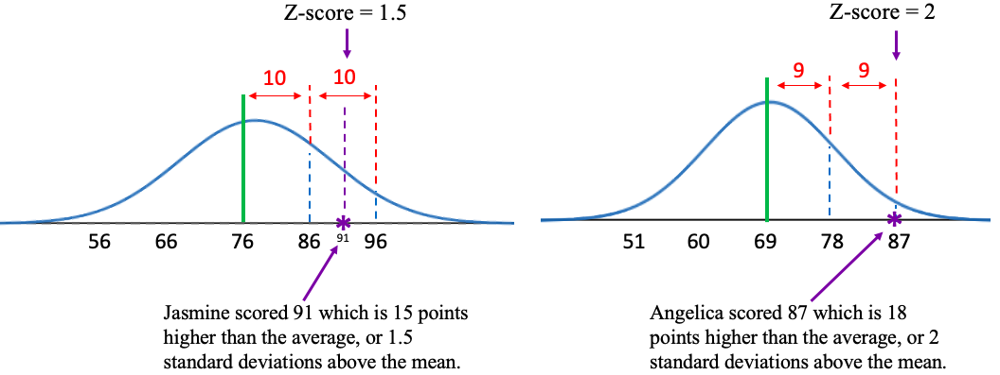
Figure 3.26: Z-score comparison and illustration for two students.
Figure 3.27 gives an idea of how to interpret different z-scores. If an observation is above the mean, it is “above average”. It will have a positive z-score. If an observation is below the mean, it is “below average”. It will have a negative z-score. If an observation is close to the mean, it will have a z-score that is close to zero.
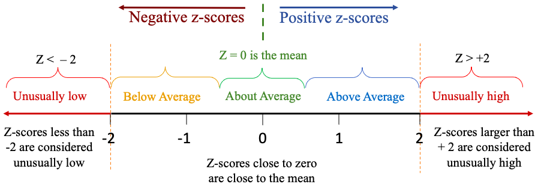
Figure 3.27: Range of values for z-scores.
In the example about exam scores, a larger z-score means that you are farther above the average, which is good because higher scores on exams are better than lower scores. But the context can be different. If you are looking at death rates across counties from COVID-19, a positive z-score would mean a higher death rate than average. That is not a good thing! You want your county’s COVID death rate to have a negative z-score, meaning that fewer die than the average. If you are manufacturing a part that needs to meet specifications to work, it can’t be too far below the target nor too far above. You want a z-score close to zero in that situation. The context can change!

Important Point!
A positive z-score indicates that the observation is higher than or larger than the mean. A negative z-score indicates that the observation is lower than or smaller than the mean. A z-score close to zero indicates that the observation is close to the mean.
Note that we use z-scores only when data are bell-shaped. Z-scores can be used to describe the relative position of one individual or compare two individuals from different populations relative to their respective groups (like Angelica and Jasmine from different courses).
Example 2: Calculating z-scores
Table 17 lists the average poverty rates in the United States (previously given in example 6 in section 2.2). You can copy the poverty rate data (opens in a new tab). The histogram and summary statistics from STATBELT Utility are provided in figure 3.28. Verify that the data are bell-shaped. Find the mean and standard deviation of the average poverty rates. Then find and interpret the z-scores for California, Mississippi, and New Hampshire. Because this list contains data from every state and the District of Columbia, treat the data as a population.
Table 17: Average Poverty Rates in the US from 2016-2018 | |||||||
|---|---|---|---|---|---|---|---|
Alabama | 16.0 | Illinois | 10.9 | Montana | 10.4 | Rhode Island | 10.3 |
Alaska | 12.2 | Indiana | 11.8 | Nebraska | 10.4 | South Carolina | 14.1 |
Arizona | 14.4 | Iowa | 9.2 | Nevada | 12.2 | South Dakota | 11.8 |
Arkansas | 15.5 | Kansas | 10.8 | New Hampshire | 6.4 | Tennessee | 12.6 |
California | 12.5 | Kentucky | 15.3 | New Jersey | 9.1 | Texas | 13.7 |
Colorado | 8.9 | Louisiana | 19.8 | New Mexico | 18.7 | Utah | 7.9 |
Connecticut | 9.9 | Maine | 12.6 | New York | 11.8 | Vermont | 9.6 |
Delaware | 9.6 | Maryland | 7.1 | North Carolina | 14.1 | Virginia | 10.7 |
District of Columbia | 14.9 | Massachusetts | 9.8 | North Dakota | 10.9 | Washington | 10.3 |
Florida | 13.6 | Michigan | 11.0 | Ohio | 12.8 | West Virginia | 17.2 |
Georgia | 14.7 | Minnesota | 8.7 | Oklahoma | 14.0 | Wisconsin | 9.5 |
Hawaii | 9.5 | Mississippi | 19.8 | Oregon | 10.6 | Wyoming | 11.4 |
Idaho | 11.3 | Missouri | 11.9 | Pennsylvania | 11.5 | ||


Figure 3.28: Histogram and summary statistics for average poverty rates in the US.
Solution:In example 6, section 2.2, we used STATBELT Utility to make the histogram shown in figure 3.28. The histogram appears to be close to bell shaped, with possibly a very slight skew to the right. Because it is bell-shaped, we can compute z-scores as measures of position. Because this is a population, we checked “Population standard deviation (σ)” in STATBELT Utility.
Recall that we report the mean and standard deviation to one decimal place more than the original data, so the mean would be reported as 12.03 and the standard deviation as 2.93. But since we will use the mean and standard deviation in calculations, we will need to use more decimal places of accuracy, then round our answer at the end. This will avoid round-off errors that can propagate and cause the final answer to be wrong, even when the process we used was correct.
 Tip!
Tip!When performing calculations using formulas, such as z-scores, round your answers at the END of the process. Use as many decimals as you can during the calculations, at least twice as many decimal places of accuracy as you would normally need. Generally, more decimal places of accuracy during the calculations are better! Save all your rounding for the last step!
Now we will compute the z-scores for the three requested states. The score x is the average poverty rate from that state. For historical reasons, z-scores are rounded to two decimal places. Following order of operations, you must first complete the subtraction in the numerator, then divide.
California: Score x = 12.5
The z-score for California is 0.16, which is close to zero. The poverty rate in California is 0.16 standard deviations above the mean. That indicates that California has a slightly higher than average poverty rate but is close to average.
Mississippi: Score x = 19.8
The z-score for Mississippi is 2.65, which is well above 2. That indicates that Mississippi has a poverty rate that is unusually high, compared to the rest of the country.
New Hampshire: Score x = 6.4
The z-score for New Hampshire is -1.92. The negative indicates that New Hampshire has a lower poverty rate than average. The z-score is not less than -2, so it is not unusually low. It is, however, quite a bit lower than the average, compared to the rest of the country.
Example 3: Computing Z-scores
The summary statistics for the age of United States Presidents at inauguration are shown in figure 3.29. We have previously seen that the ages at inauguration are bell-shaped. Use z-scores to compare the youngest president, Theodore Roosevelt, who was 42, and the oldest president, Joe Biden, who was 78. Which president’s age was more unusual, compared to the rest of US Presidents?
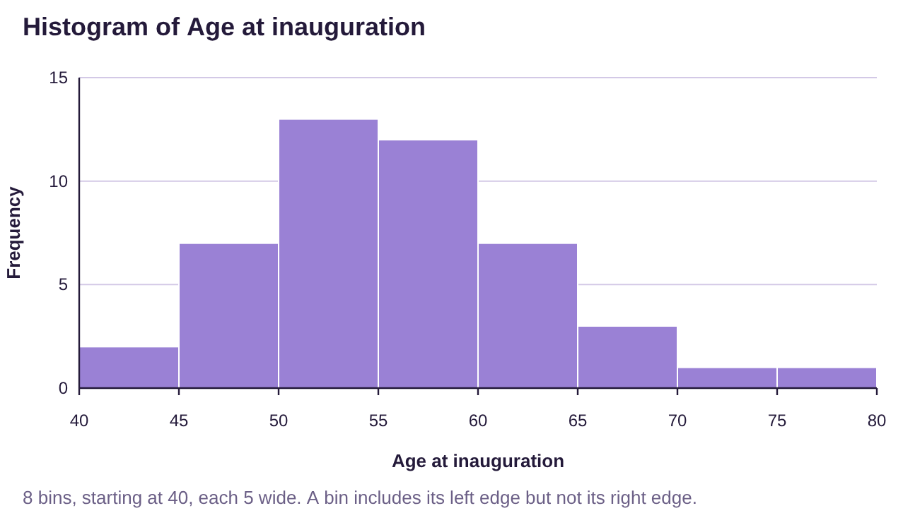

Figure 3.29: Histogram and summary statistics age of US Presidents at inauguration.
Solution:The histogram shown in figure 3.29 shows the ages are bell-shaped, so using z-scores is appropriate. In a previous example, we rounded the mean to 55.5, but we will use 55.478 in the calculations. The standard deviation we gave was 7.25, but we will use 7.2524 in our calculations.
Theodore Roosevelt: Score x = 42
Theodore Roosevelt was 1.86 standard deviations below the mean. That means that he was quite a bit younger than the average president at inauguration, but not quite unusually young.
Joe Biden: Score x = 78
Joe Biden was 3.11 standard deviations above the mean. Since the z-score is higher than 2, we interpret this as unusual. That means that Joe Biden was unusually old at inauguration, compared to the rest of the US Presidents.
So which presidential age was more unusual? Remember that a z-score equal to zero is the mean. So, the farther from zero the z-score is, the farther it is from average. Using this line of thinking, the more extreme the z-score, the more unusual the individual is. Joe Biden’s age was more unusual than Theodore Roosevelt’s age because Joe Biden’s z-score was farther from zero. (Note that a negative z-score can be more unusual. For example, George H. W. Bush was 64 when inaugurated and has a z-score equal to 1.18. Since Roosevelt’s z-score is -1.86, and thus farther from zero, so Roosevelt’s age was more unusual than Bush’s age.)
Percentiles
If a data distribution is bell-shaped, we can use z-scores to describe location in the data. But if the data are skewed, we should not use z-scores. Instead, we use percentiles. Percentiles provide a description of where an individual observation ranks in the data when it is arranged in ascending order.
Definition 3
The percentile rank of an individual observation is the percent of data that are at or below the observation.
We say the kth percentile is the value in the data that has k% of the data at or below that value.
The notation for the kth percentile is .
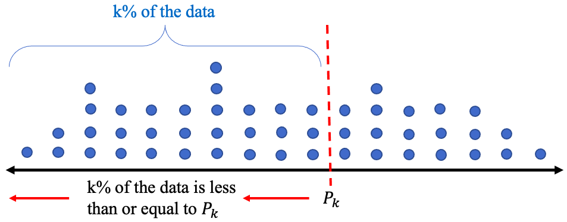
Figure 3.30: Illustration of the kth percentile.
Example 4: Interpreting Percentiles
After taking a standardized exam, you are told that you scored 425 which is at the 85th percentile. Interpret the meaning of the percentile rank.
Solution:Scoring in the 85th percentile means that 85% of the other students’ scores were less than or equal to your score. In this case, means that 85% of scores on the standardized test were less than or equal to 425. Since all the scores together are 100% of the data, there are 100% – 85% = 15% of scores left that were higher than yours. See figure 3.31.
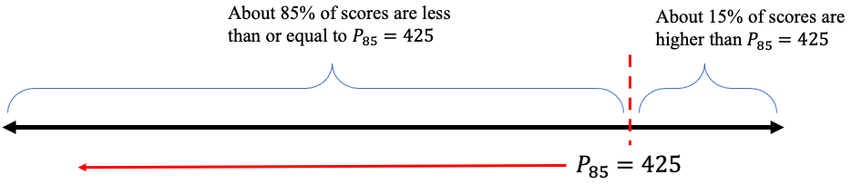
Figure 3.31: Illustration of the 85th percentile.
Example 5: Interpreting Percentiles
At a healthy-baby wellness-checkup, you are told that your beautiful baby girl is at the 34th percentile for her weight. You are also told that she is at the 57th percentile for her length. Interpret these percentile ranks.
Photo by hessam nabavi (opens in a new tab) on Unsplash (opens in a new tab)
Solution:We are not told how much the baby weighs, but we know she is at the
34th percentile. That means about 34% of babies of the same age weigh less than or equal to your baby girl. It also means that about 100% – 34% = 66% of similar babies weigh more.
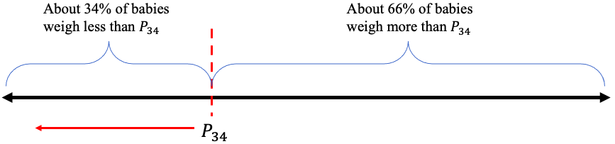
Figure 3.32: Illustration of the 34th percentile.
So, your baby weighs less than the median weight for babies at her age. (Note that the median is the same as the 50th percentile!)
We are also not told the length of the baby, but we know she is at the 57th percentile. That means 57% of similar babies are equal to or shorter, and about 100% – 57% = 43% are longer. Your baby is just a little longer, but close to the median length for babies in her age group.
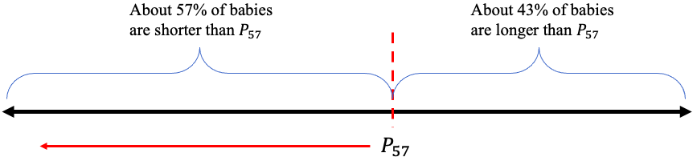
Figure 3.33: Illustration of the 57th percentile.
Important Point!
The percentile always gives the percent of the data that is smaller, less than, or on the left of the individual observation. You can find the percent that is larger, more than, or on the right by subtracting the percentile percent from 100% as we did in the last three examples.
If you have a data set and wish to compute the percentile rank of an observation, use the following steps.
How to Find Percentile Rank from a Set of Data
To find the percentile rank of an observation x from a data set:
1.Arrange the data in ascending order.
2.Count the number of observations that are less than or equal to x.
3.The percentile rank of x =
If the result is a decimal, truncate it at a whole percent. DO NOT ROUND UP! For example, 36.9% would be the 36th percentile, not the 37th. The value would be said to be “in” the 36th percentile.
Example 6: Finding and Interpreting Percentiles from Data
Table 17 lists the average poverty rates in the United States. You can copy the poverty rate data (opens in a new tab) (if you haven’t already). Find the percentile ranks of Hawaii and Oklahoma.
Table 17: Average Poverty Rates in the US from 2016-2018 | |||||||
|---|---|---|---|---|---|---|---|
Alabama | 16.0 | Illinois | 10.9 | Montana | 10.4 | Rhode Island | 10.3 |
Alaska | 12.2 | Indiana | 11.8 | Nebraska | 10.4 | South Carolina | 14.1 |
Arizona | 14.4 | Iowa | 9.2 | Nevada | 12.2 | South Dakota | 11.8 |
Arkansas | 15.5 | Kansas | 10.8 | New Hampshire | 6.4 | Tennessee | 12.6 |
California | 12.5 | Kentucky | 15.3 | New Jersey | 9.1 | Texas | 13.7 |
Colorado | 8.9 | Louisiana | 19.8 | New Mexico | 18.7 | Utah | 7.9 |
Connecticut | 9.9 | Maine | 12.6 | New York | 11.8 | Vermont | 9.6 |
Delaware | 9.6 | Maryland | 7.1 | North Carolina | 14.1 | Virginia | 10.7 |
District of Columbia | 14.9 | Massachusetts | 9.8 | North Dakota | 10.9 | Washington | 10.3 |
Florida | 13.6 | Michigan | 11.0 | Ohio | 12.8 | West Virginia | 17.2 |
Georgia | 14.7 | Minnesota | 8.7 | Oklahoma | 14.0 | Wisconsin | 9.5 |
Hawaii | 9.5 | Mississippi | 19.8 | Oregon | 10.6 | Wyoming | 11.4 |
Idaho | 11.3 | Missouri | 11.9 | Pennsylvania | 11.5 | ||
Solution:First of all, Hawaii has a poverty rate equal to 9.5. We need to count the number of poverty rates from the table that are less than or equal to 9.5.
Step 1:We sorted the data using STATBELT Utility (Data → Sort a column, then “Smallest first”), with the results given in Table 18.
Step 2:Locating 9.5 in the list, we then count the number of values that are less than or equal to 9.5, highlighted in red. There were 9 states with average poverty rates less than or equal to 9.5%.
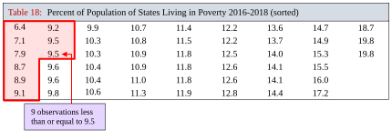
Table 18: Percent of Population of States Living in Poverty 2016-2018 (sorted) | ||||||||
|---|---|---|---|---|---|---|---|---|
6.4 | 9.2 | 9.9 | 10.7 | 11.4 | 12.2 | 13.6 | 14.7 | 18.7 |
7.1 | 9.5 | 10.3 | 10.8 | 11.5 | 12.2 | 13.7 | 14.9 | 19.8 |
7.9 | 9.5 | 10.3 | 10.9 | 11.8 | 12.5 | 14.0 | 15.3 | 19.8 |
8.7 | 9.6 | 10.4 | 10.9 | 11.8 | 12.6 | 14.1 | 15.5 | |
8.9 | 9.6 | 10.4 | 11.0 | 11.8 | 12.6 | 14.1 | 16.0 | |
9.1 | 9.8 | 10.6 | 11.3 | 11.9 | 12.8 | 14.4 | 17.2 | |
Step 3:The percentile rank of Hawaii calculates as
So, Hawaii’s average poverty rate ranks in the 17th percentile.
Next, Oklahoma has a poverty rate equal to 14.0%. We have already completed Step 1.
Step 2:Locating 14.0 in the list, we then count the number of values that are less than or equal to it, highlighted in red. There were 39 states with average poverty rates less than or equal to 14.0%.
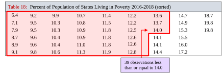
Table 18: Percent of Population of States Living in Poverty 2016-2018 (sorted) | ||||||||
|---|---|---|---|---|---|---|---|---|
6.4 | 9.2 | 9.9 | 10.7 | 11.4 | 12.2 | 13.6 | 14.7 | 18.7 |
7.1 | 9.5 | 10.3 | 10.8 | 11.5 | 12.2 | 13.7 | 14.9 | 19.8 |
7.9 | 9.5 | 10.3 | 10.9 | 11.8 | 12.5 | 14.0 | 15.3 | 19.8 |
8.7 | 9.6 | 10.4 | 10.9 | 11.8 | 12.6 | 14.1 | 15.5 | |
8.9 | 9.6 | 10.4 | 11.0 | 11.8 | 12.6 | 14.1 | 16.0 | |
9.1 | 9.8 | 10.6 | 11.3 | 11.9 | 12.8 | 14.4 | 17.2 | |
Step 3:The percentile rank of Oklahoma calculates as
So, Oklahoma’s average poverty rate ranks in the 76th percentile.
Quartiles
Some percentiles have uses that go beyond measuring location of individual observations and have special names. They are the quartiles. The quartiles divide the data into 4 equally sized chunks of data, each with approximately 25% of the total.
Definition 4
The Quartiles of a data set are the 25th, 50th, and 75th percentiles. The notations are:
= the 25th percentile
= the 50th percentile = the Median
= the 75th percentile
The second quartile is the same as the median, and the first quartile, , is the median of the smaller half of the data. In other words, is the median of all the data that are below the median. Similarly, is the median of all the data that are larger than the median. It is not as complicated as it sounds. To find the quartiles, we will first find the median, then find the median of each half of the data. Together, these are the quartiles. See figure 3.34.
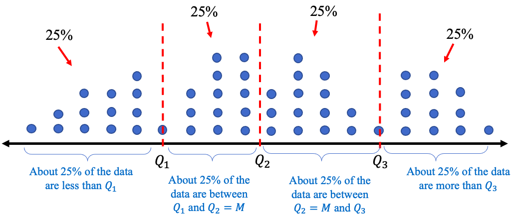
Figure 3.34: Illustration of quartiles.
How to Find Quartiles from a Set of Data
To find the quartiles from a data set:
1.Arrange the data in ascending order.
2.Find the median. = the median.
3.Find = the median of all observations lower than .
Find = the median of all observations higher than .
We will do one example by hand, but you will see that technology will find the quartiles for you. Generally, using technology is preferred when the goal is to find the quartiles. Seeing the process of finding the quartiles will help you to understand their meaning.
Example 7: Finding and Interpreting Quartiles from Data
Table 19 contains scores on a quiz from a small class. Find the quartiles of the data set.
Table 19: Quiz Scores | ||||||||||
|---|---|---|---|---|---|---|---|---|---|---|
8 | 5 | 7 | 5 | 9 | 4 | 9 | 4 | 10 | 3 | 9 |
Solution:Step 1:Arrange the data in ascending order. You can do this by eye because the data set is small. But for any large data set, please use technology to sort the data!
344557899910
Step 2:Find the median. Since the data set has observations, and 11 is odd, the median will be at location , so the median is 6th in the list. In this list, the 6th observation is 7.
The second quartile is the median.
Step 3:Find the median of all the scores that are lower than 7. That will be .
There are 5 observations that are less than 7, so the median is the 3rd of these.
The median of the lower half of the data is 4, so .
Finally, we find the median of all the scores that were higher than 7.
This half also has 5 observations, so the third is the median, which is 9. So .
Putting them together, the quartiles are 4, 7, and 9.
The quartiles have divided the data into 4 equally sized groups. That’s what the quartiles do. (However, in this case, each group does not have 25% of the data. That is because our data set was very small, and the quartiles don’t count in the percentages.)
STATBELT Utility- Finding Quartiles
Open STATBELT Utility and type or paste the data into one column. Type a name for the column in its heading.
1.Select Descriptive Statistics → Basic Statistics.
2.Under “Columns to include,” check the column with the data.
3.For a broad summary, click “Show results in a new window.” The default summary includes the quartiles Q1, Q2, and Q3 (Q2 is also listed as the Median). To see the interquartile range too, check “Interquartile range (IQR)” under “Statistics to show.”
Example 8: Finding and Interpreting Quartiles using STATBELT Utility
Table 19 contains scores on a quiz from a small class. Find the quartiles of the data set.
Table 19: Quiz Scores | ||||||||||
|---|---|---|---|---|---|---|---|---|---|---|
8 | 5 | 7 | 5 | 9 | 4 | 9 | 4 | 10 | 3 | 9 |
Solution:First, type the data into a column in STATBELT Utility. Then select Descriptive Statistics → Basic Statistics. Check the column and click “Show results in a new window.”. The output is shown in figure 3.35. STATBELT Utility lists the quartiles as Q1, Q2, and Q3, and the second quartile also appears as the Median. As you see, the STATBELT Utility output agrees with the work we did in example 7, namely that the quartiles are .
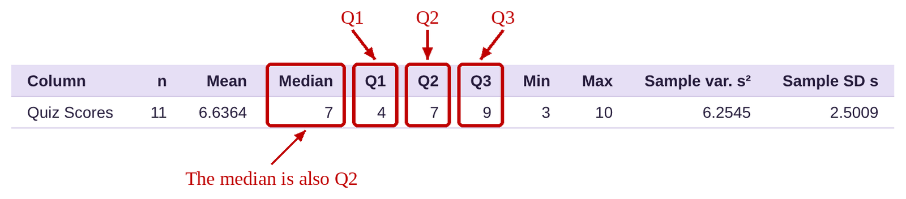
Figure 3.35: STATBELT Utility output.
Example 9: Finding and Interpreting Quartiles using Technology
Table 17 lists the average poverty rates in the United States. You can still copy the poverty rate data (opens in a new tab). Find and interpret the Quartiles.
Table 17: Average Poverty Rates in the US from 2016-2018 | |||||||
|---|---|---|---|---|---|---|---|
Alabama | 16.0 | Illinois | 10.9 | Montana | 10.4 | Rhode Island | 10.3 |
Alaska | 12.2 | Indiana | 11.8 | Nebraska | 10.4 | South Carolina | 14.1 |
Arizona | 14.4 | Iowa | 9.2 | Nevada | 12.2 | South Dakota | 11.8 |
Arkansas | 15.5 | Kansas | 10.8 | New Hampshire | 6.4 | Tennessee | 12.6 |
California | 12.5 | Kentucky | 15.3 | New Jersey | 9.1 | Texas | 13.7 |
Colorado | 8.9 | Louisiana | 19.8 | New Mexico | 18.7 | Utah | 7.9 |
Connecticut | 9.9 | Maine | 12.6 | New York | 11.8 | Vermont | 9.6 |
Delaware | 9.6 | Maryland | 7.1 | North Carolina | 14.1 | Virginia | 10.7 |
District of Columbia | 14.9 | Massachusetts | 9.8 | North Dakota | 10.9 | Washington | 10.3 |
Florida | 13.6 | Michigan | 11.0 | Ohio | 12.8 | West Virginia | 17.2 |
Georgia | 14.7 | Minnesota | 8.7 | Oklahoma | 14.0 | Wisconsin | 9.5 |
Hawaii | 9.5 | Mississippi | 19.8 | Oregon | 10.6 | Wyoming | 11.4 |
Idaho | 11.3 | Missouri | 11.9 | Pennsylvania | 11.5 | ||
Solution:Although you can type the data into STATBELT Utility, it will save time to copy and paste it, or to choose “U.S. Poverty Rates by State (and DC)” from STATBELT Utility’s “Sample Data” menu. Either way, you then select Descriptive Statistics → Basic Statistics. Check the column “Average Poverty rate 2016-2018” and click “Show results in a new window.” The output is below.
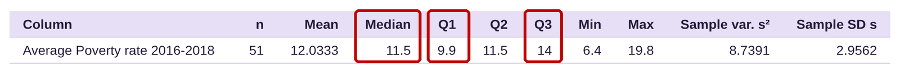
The quartiles are . That means that about 25% of states have poverty rates less than 9.9%. About 25% of states have poverty rates between 9.9% and 11.5%. About 25% of states have poverty rates between 11.5% and 14%, and about 25% of states have poverty rates higher than 14%.
Interquartile Range
As mentioned earlier, quartiles have other uses. You may recall from section 3.1 that the mean is sensitive to extreme observations, while the median is resistant to them. Like the median, the quartiles are resistant to extreme observations (they are all medians, after all). When we use standard deviation to measure dispersion, our calculations are based on the mean, which is sensitive to extreme values, and hence the standard deviation is also sensitive to them. Standard deviation will be inflated by extreme values when data are skewed, so it doesn’t do a good job measuring variation in that case. However, since the quartiles are resistant to extreme values, we can use them to create an alternative to standard deviation that will work for skewed data. This measure is called the interquartile range.
Definition 5
The Interquartile Range of data is the width of the interval that contains the “middle” 50% of the data. It is denoted as IQR. See figure 3.36.
The formula for interquartile range is .
IQR is the statistic we use to measure variation/dispersion for skewed data.
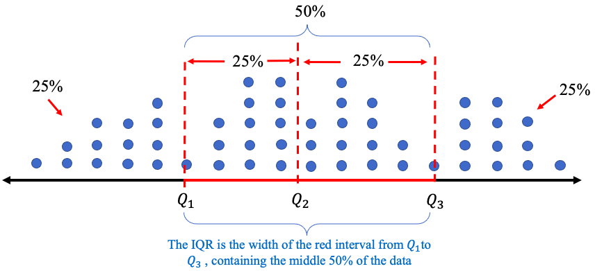
Figure 3.36: Interquartile range (IQR).
Example 10: Finding and interpreting the interquartile range
Table 19 contains scores on a quiz from a small class. We found the quartiles in example 7. Find the interquartile range (IQR) of the data set. What does it represent?
Table 19: Quiz Scores | ||||||||||
|---|---|---|---|---|---|---|---|---|---|---|
8 | 5 | 7 | 5 | 9 | 4 | 9 | 4 | 10 | 3 | 9 |
Solution:We have already found the quartiles. They are . The interquartile range is .
The interpretation of is that the middle 50% of the data are contained within an interval of width 5.
Tip!You can find the quartiles and IQR using technology. But if you find them by looking at the data (without technology), don’t forget that the data must first be sorted from smallest to largest! That is, the data must be viewed in ascending order to identify median, quartiles, and IQR.
Example 11: Finding and interpreting the interquartile range
Table 17 lists the average poverty rates in the United States. You can copy the poverty rate data (opens in a new tab). We found the quartiles in example 9. Find and interpret the interquartile range (IQR).
Solution:In example 9 we found the quartiles. They are . The interquartile range is .
The interpretation of is that 50% of the states’ average poverty rates are contained within an interval of width 4.1%.
Interquartile range, used as a measure of variation, is very similar to standard deviation in how we interpret it. A large IQR means the middle 50% of data are more widely spread out. A smaller IQR means the middle 50% of data are more closely grouped. See figure 3.37. The interquartile range measures the dispersion of the middle 50%, so the lowest and highest 25% of the data do not factor into the calculation. That is why IQR is resistant to outliers and a better choice to measure variation for skewed data.
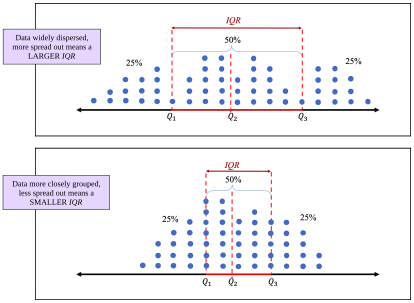
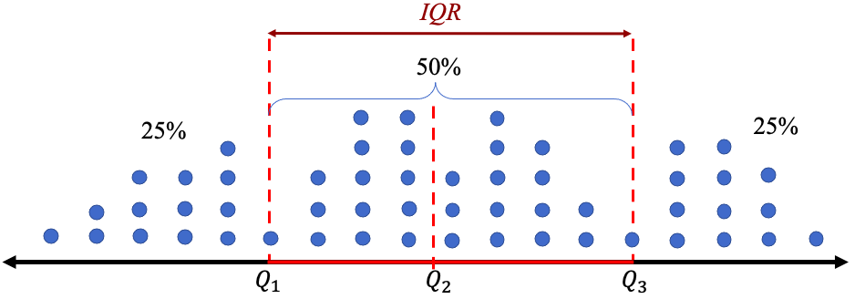
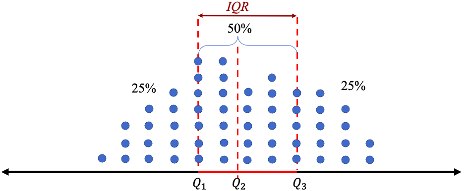
Figure 3.37: Interquartile range (IQR) relative size comparisons.
Example 12: Unemployment Rates
Table 20 lists the unemployment rates for Black and White Americans from 1990 to 2019. Make histograms and describe the distributions for each group. Find the quartiles and IQR. Which group had lower unemployment rates? Which Americans had less variation over the years? You can copy the unemployment data (opens in a new tab).
Table 20: Unemployment Rates for Black and White Americans 1990 to 2019 | ||||||||
|---|---|---|---|---|---|---|---|---|
Year | Black | White | Year | Black | White | Year | Black | White |
1990 | 11.4 | 4.8 | 2000 | 7.6 | 3.5 | 2010 | 16 | 8.7 |
1991 | 12.5 | 6.1 | 2001 | 8.6 | 4.2 | 2011 | 15.8 | 7.9 |
1992 | 14.2 | 6.6 | 2002 | 10.2 | 5.1 | 2012 | 13.8 | 7.2 |
1993 | 13 | 6.1 | 2003 | 10.8 | 5.2 | 2013 | 13.1 | 6.5 |
1994 | 11.5 | 5.3 | 2004 | 10.4 | 4.8 | 2014 | 11.3 | 5.3 |
1995 | 10.4 | 4.9 | 2005 | 10 | 4.4 | 2015 | 9.6 | 4.6 |
1996 | 10.5 | 4.7 | 2006 | 8.9 | 4 | 2016 | 8.4 | 4.3 |
1997 | 10 | 4.2 | 2007 | 8.3 | 4.1 | 2017 | 7.5 | 3.8 |
1998 | 8.9 | 3.9 | 2008 | 10.1 | 5.2 | 2018 | 6.5 | 3.5 |
1999 | 8 | 3.7 | 2009 | 14.8 | 8.5 | 2019 | 6.1 | 3.3 |
Solution:First, copy or type the data into STATBELT Utility in three columns named Year, Black, and White. The data are also in STATBELT Utility’s “Sample Data” menu as “Unemployment Rates 1990-2020.” If you load them, clear the 2020 row (row 31), because this example uses 1990 to 2019.
To make the histograms, select Graphs → Histogram and choose “Black” for “Column.” To make the two histograms easy to compare, give them the same bin width. Uncheck “Choose start and bin width automatically,” type 6 for “Start at” and 1 for “Bin width,” and click “Open graph in a new window.” Then choose “White” for “Column,” type 3 for “Start at,” and open a second graph. STATBELT Utility draws each histogram on its own axes, so check the numbers on the horizontal axes when you compare them. The histograms are shown in figure 3.38.
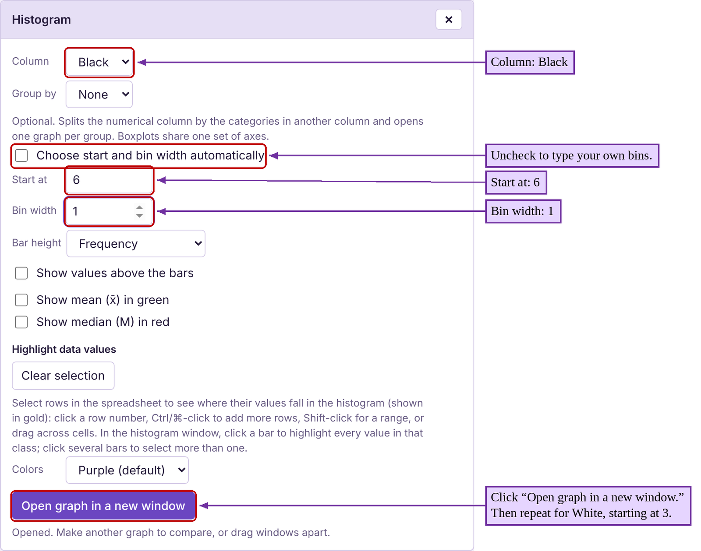
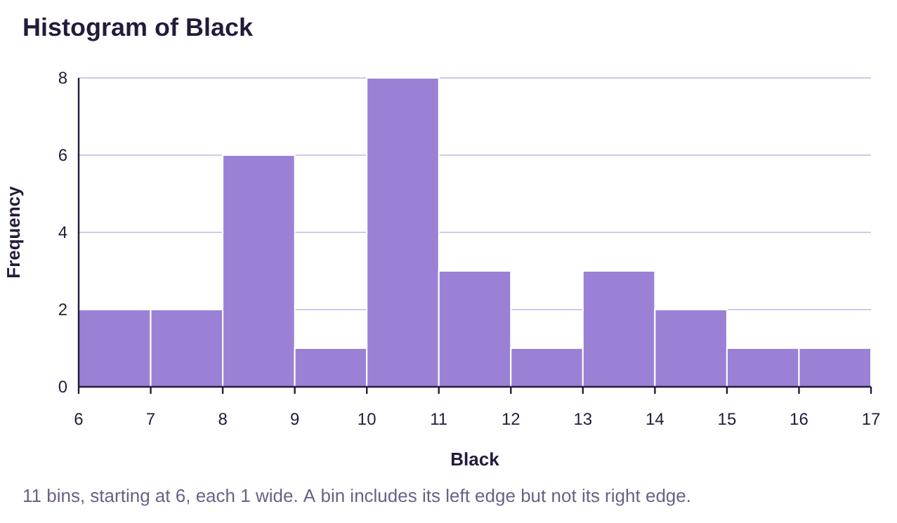
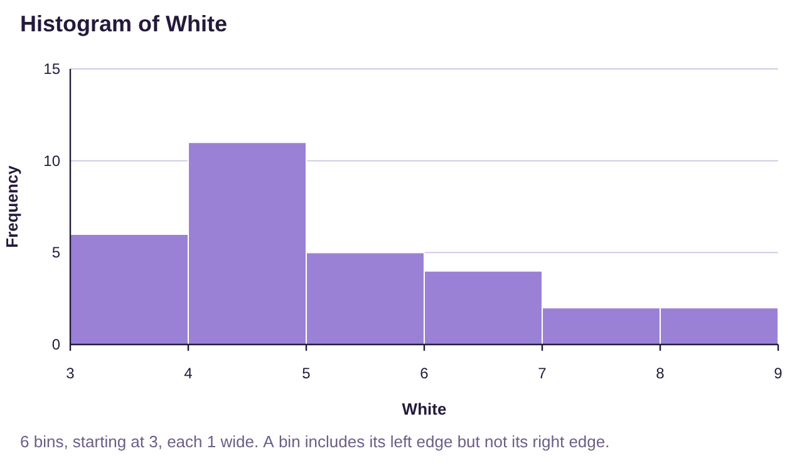
Figure 3.38: Histograms for Black and White unemployment rates 1990 to 2019.
It appears that the historic unemployment rates for Black Americans is more variable, ranging from 6% to 17%. The historic unemployment rates for White Americans have not been over 9%. Neither distribution is bell-shaped, but White unemployment rates look more highly skewed to the right. Because the data are skewed, we will use median to measure the center of the data, and IQR to measure the dispersion of each group.
To find the quartiles and IQR, select Descriptive Statistics → Basic Statistics and check “Black” and “White” under “Columns to include.” Under “Statistics to show,” also check “Interquartile range (IQR),” then click “Show results in a new window.”

Black Americans: . The interquartile range is
.
The median unemployment rate for Black Americans is 10.3%. The IQR is 3.9%. This tells us that the middle 50% of unemployment rates for Black Americans are within an interval of width 3.9 percentage points.
White Americans: . The interquartile range is
.
The median unemployment rate for White Americans is 4.8%. The IQR is 2.0%. This tells us that the middle 50% of unemployment rates for White Americans are within an interval of width 2.0 percentage points.
Looking at the quartiles objectively, the median unemployment rate is 10.3% for Black Americans and 4.8% for White Americans. Therefore, White Americans have a lower unemployment rate. In fact, the third quartile for White Americans ( is lower than the first quartile for Black Americans ( . That means that more than 75% of White American unemployment rates were less than 6.1% while more than 75% of Black American unemployment rates were higher than 8.6%. Black Americans experience higher unemployment rates.
Additionally, the IQR for Black Americans at 3.9% is nearly twice that for White Americans at 2.0%. This means that the unemployment rates for White Americans have been less variable and more consistent than for Black Americans. Black Americans suffer from higher unemployment rates, and wider swings in those rates than the much more consistent unemployment rates for White Americans.
These Statistics can be used as a justification for the need for further research. What causes differences in unemployment rates for Black Americans versus White Americans? Many studies have been carried out investigating how systemic racism affects Americans. Statistical analysis can be used to help understand the results.
We will conclude this section by summarizing the statistics we have studied and identify when they are best used to describe data.
In the last example we chose to use the median and IQR to describe the center and variation of the data. That decision was made because the data are skewed. If we had been asked to measure relative position, we would have used percentiles, again because the data are skewed. When data are bell shaped, we will prefer to use the mean to measure center, standard deviation to measure dispersion, and z-scores to measure position. A decision tree is provided in figure 3.39.
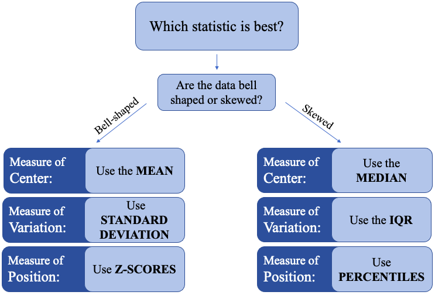
Figure 3.39: “Which statistic is best to use?” decision tree.
Use the decision tree in figure 3.39 to determine the best statistics to use in examples 13-15.
Example 13: Which measures are best?
Consider the histogram for high school grade point average in figure 3.40. Which measure of center is best for this data? Which measure of variation is best? What would you use to describe relative position in the data?
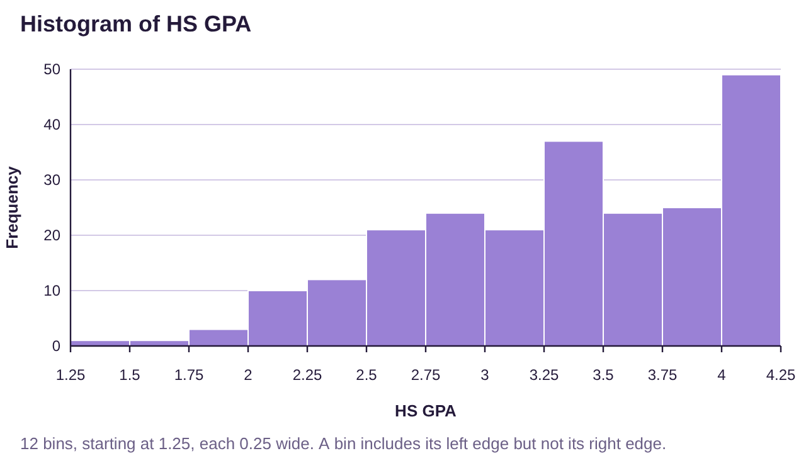
Figure 3.40: High School Grade Point Average.
Solution:The histogram for high school grade point average is highly skewed to the left. Therefore, we would use:
Median to measure center.
IQR to measure variation.
Percentiles to measure location/position within the data set
Example 14: Which measures are best?
Consider the histogram for heart rate data shown in figure 3.41. Which measure of center is best? Which measure of variation is best? What would you use to describe relative position in the data?
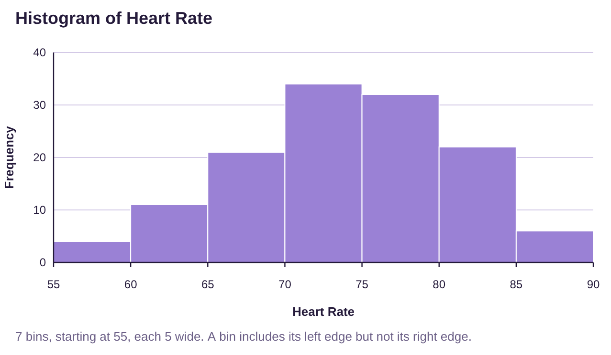
Figure 3.41: Heart rate data.
Solution:The histogram for heart rates appears to be bell-shaped. Therefore, we would use:
Mean to measure center.
Standard deviation to measure variation.
Z-scores to measure location/position within the data set.
Example 15: Which measures are best?
The histogram for domestic gross for Marvel and DC superhero movies through 2019 is shown in figure 3.42. Which measure of center is preferred for this data? Which measure of variation is best? What would you use to describe relative position in the data?
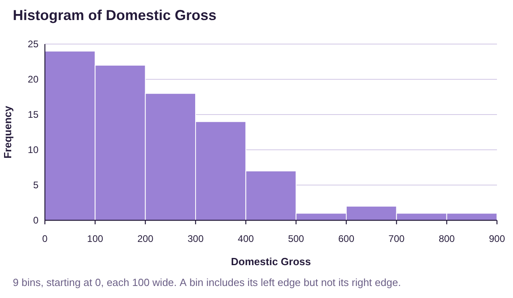
Figure 3.42: Domestic Gross for Marvel and DC superhero movies.
Solution:The histogram for high school grade point average is highly skewed to the left. Therefore, we would use:
Median to measure center.
IQR to measure variation.
Percentiles to measure location/position within the data set